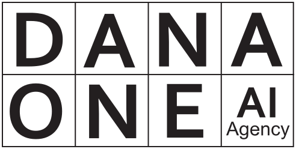

- تکانه
- حامیان
حامیان و شرکا
تکانه یک طرح مستقل است. حمایت مالی، پژوهش و انتشار مراحل بعدی آن را ممکن میکند، بدون آنکه در محتوا و مواضع طرح دخالتی داشته باشد.

داناوان
آژانس پژوهش و مشاورهی هوش مصنوعی؛ از پژوهش عاملمحور تا استقرار عملی در کسبوکار.
danaone.irهمراه شدن با تکانه
چهار چیز از پیش روشن است: حمایت چیست، چه چیزی را تغییر نمیدهد، چه چیزی در ازای آن ارائه میشود و چه کسی میتواند حامی شود.
تعریف حمایت
حمایت مالی یا غیرنقدی برای پژوهش، طراحی و انتشار مراحل بعدی تکانه و کوهورتهای مومنتوم؛ نه سرمایهگذاری، نه خرید سهم در محتوا.
اصل استقلال محتوایی
حمایت مالی هیچ تأثیری در نتیجهگیری، داده یا مواضع این طرح ندارد. همین اصل شفافیتی که در «داشبورد باز» آمده، بر رابطه با هر حامی هم حاکم است.
آنچه ارائه میشود
درج نام و لوگو در این طرح و در انتشار عمومی مومنتوم، ارجاع در داشبورد باز کوهورتها، و معرفی بهعنوان حامی رسمی در گزارشهای بعدی.
معیار همسویی
پذیرش هر حمایت منوط به همسویی با اصول ششگانهی تکانه است: شفافیت، بازارمحوری و پرهیز از رانت؛ نه صرفاً توان مالی.